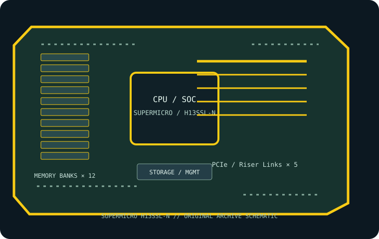

[ INDIVIDUAL COMPONENT // MOTHERBOARDS ]
Supermicro H13SSL-N
Single-SP5 ATX server board for supported AMD EPYC 9004-family processors with ECC RDIMM and integrated BMC. This page records the exact printed model and revision policy with manufacturer references.

MODEL / REVISION: Exact model suffix “-N” is significant; read PCB revision and match all firmware and cabling guidance to H13SSL-N (not H13SSL-NT or H13SSL-i).
Specifications
| Exact model / revision | Supermicro H13SSL-N — Exact model suffix “-N” is significant; read PCB revision and match all firmware and cabling guidance to H13SSL-N (not H13SSL-NT or H13SSL-i). |
|---|---|
| CPU and socket | One Socket SP5 for supported AMD EPYC 9004-series processors; exact models/steppings and newer-family support require the model-specific CPU list and BIOS. |
| Chipset / platform | AMD SP5 platform. |
| Board size | ATX-class, 305 × 256 mm (12 × 10.1 in); check enclosure support for its extended width. |
| Memory / ECC / registered | Twelve DDR5 ECC Registered DIMM sockets, one set of memory channels; RDIMM/3DS RDIMM only. Capacity and transfer rate depend on processor, DIMM rank, BIOS and approved population. |
| PCIe / lanes | Three PCIe 5.0 x16 slots and two PCIe 5.0 x8 slots, with additional MCIO PCIe links; lane sharing/routing is documented in the board manual. |
| Storage | Eight SATA 6 Gb/s ports, two M.2 PCIe 5.0 x4 sockets, and MCIO connectors for PCIe/SATA expansion; verify connector mode and sharing in the manual. |
| Networking / BMC | Two 1GbE host LAN ports and a dedicated 1GbE IPMI LAN; ASPEED AST2600 BMC. |
| Firmware / compatibility | Confirm CPU model/stepping and minimum BIOS before installation; populate registered DDR5 in the documented order. H13SSL-N must not be confused with H13SSL-NT, whose networking differs. Keep BMC and BIOS revisions recorded and use exact model firmware. |
Compatibility and revision notes
Confirm CPU model/stepping and minimum BIOS before installation; populate registered DDR5 in the documented order. H13SSL-N must not be confused with H13SSL-NT, whose networking differs. Keep BMC and BIOS revisions recorded and use exact model firmware.
Before installation, verify the physical revision and assembly label, CPU support list and minimum BIOS; confirm the exact memory type (UDIMM versus registered DIMM), channel population, chassis form factor, PCIe lane routing and storage connector modes against the linked vendor manual. A mechanically compatible socket does not guarantee CPU, firmware, ECC or lane compatibility.
Preservation and service
Record BIOS and BMC versions, serial and MAC labels, installed processors and DIMM part numbers, risers/cables, and test conditions. Use ESD-safe handling, correct socket procedure and chassis airflow. Do not cross-flash firmware from a similarly named board or revision.
Sources & further reading
- Supermicro — H13SSL-N product specificationsManufacturer reference for the exact board model; use its support/QVL/manual details to verify population and compatibility.
- Supermicro — H13SSL-N manual and firmware resourcesManufacturer reference for the exact board model; use its support/QVL/manual details to verify population and compatibility.
Manufacturer model-specific references take precedence. Recheck CPU support, QVL, lane tables and current firmware for the printed board revision before service.